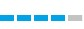

-2022 febrero – a la actualidad.Desempeño funciones en el área de planificación en la Secretaria de Enlace para el Ordenamiento Territorial y Desarrollo Sostenible.
-2021 junio – a la actualidad.Rol de auditor en el sistema LINTI (Licencia Nacional de transporte Interjurisdiccional)
-2019 junio - 2021 abril.Rol de psicólogo en el Hospital Interzonal San Juan Bautista.
Tecnicatura en Programacion(febrero - actualidad) Universidad Tecnologica Nacional
Experto Universitario en Comportamiento Organizacional(septiembre – diciembre 2021) Universidad Tecnológica Nacional (UTN)
Diplomado en recursos humanos(noviembre - abril 2021) Universidad Tecnológica Nacional (UTN)
Diplomado en Psicología Laboral y Organizacional(febrero – marzo 2020)
Licenciado en Psicología(marzo 2013- diciembre 2018) Fundación Barceló Facultad de Medicina – La Rioja
Secundario: Colegio Pre-Universitario Gral. San Martin. Modalidad: Bachiller con orientación Bienes y Servicios
Responsable
Emprendedor
Microsft Word
Excell
Rapida adaptacion a equipos de trabajo
Ingles avanzado